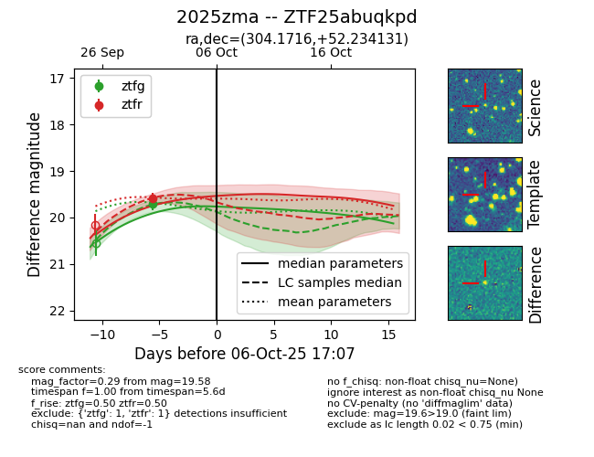
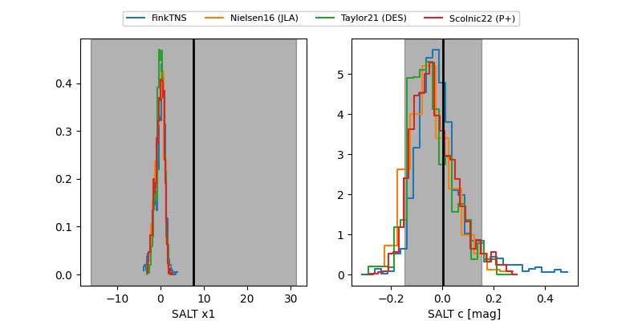

FINK: ZTF25abuqkpd
Lasair: ZTF25abuqkpd
ALeRCE: ZTF25abuqkpd
TNS: 2025zma
YSE: 2025zma
ZTF25abuqkpd (ztf,fink)
2025zma (tns,yse)
equatorial (ra, dec) = (304.1716,+52.23413)
galactic (l, b) = (87.6060,+9.34407)


last ztfg=19.71, ztfr=19.58
1 ztfg, 1 ztfr detections